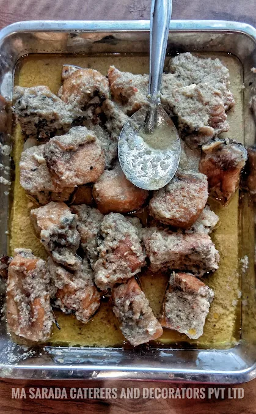
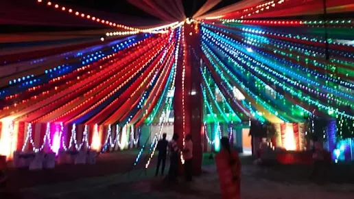
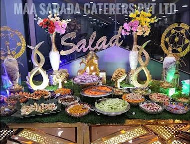
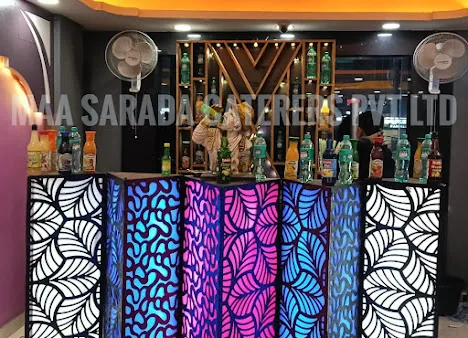
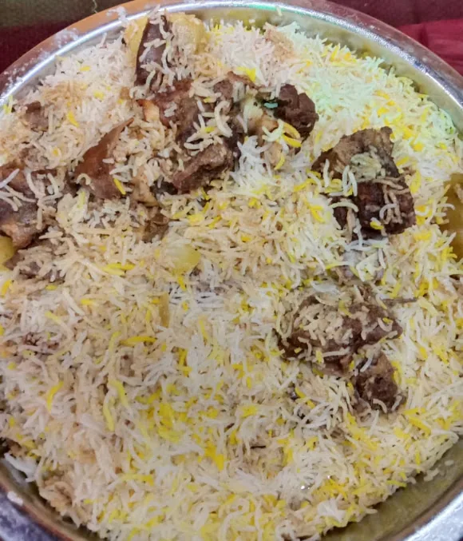

GALLERY
A gallery of moments & ideas.
A collection of past catering and celebration photographs, followed by proposed illustrations. Historic images do not promise current menus, staff or décor availability.
GENUINE LISTING PHOTOS
Past events, photographed.
The photos below appeared with the matching Sinthee business profile.








CONCEPT ART
A direction to discuss.
These generated illustrations are proposed visual ideas only.